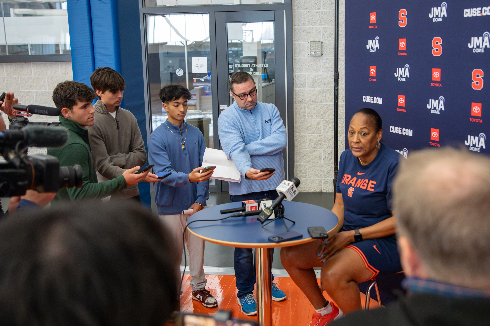
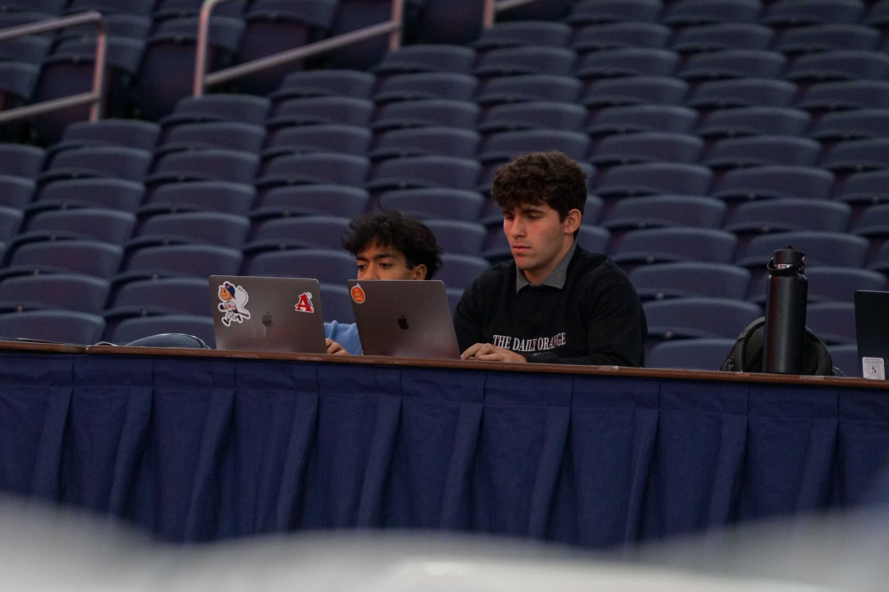

Greetings! Welcome to my site.
My name is Mauricio Palmar, and I am a second-year student in the S.I. Newhouse School of Public Communications at Syracuse University. I am majoring in Magazine, News and Digital Journalism, with a minor in Applied Data Science in the School of Information Studies. My specialty is sportswriting, and I have covered a variety of different sports.
Right now, I am an assistant sports editor at The Daily Orange — Syracuse University's independent, student-run newspaper. In this role, I refine articles to ensure they meet editorial standards, pitch headlines, craft tweets for articles and utilize WordPress to publish stories on the Daily Orange website. Previously, I was an assistant digital editor at The Daily Orange, where I primarily pitched and helped design infographics for sports articles on the Daily Orange website and curated The D.O.'s social media feeds on X and Instagram for its sports content.


In my first semester with The Daily Orange, I covered Syracuse field hockey. The following semester, I moved on to softball. After my freshman year, I was hired to serve as one of two beat reporters for the Chatham Anglers of the Cape Cod Baseball League, covering each of the team's contests throughout the summer.
To open my sophomore year with The D.O., I covered SU women's soccer. And presently, I am one of three women's basketball beat reporters for The Daily Orange. I can be seen in a blue sweater in each of these photos, covering women's basketball for The D.O. In each of these roles, I have interviewed a variety of sources and strengthened my reporting skills through game coverage and feature stories.
Prior to my time at Syracuse, I was a contributing writer for FanSided MMA, I wrote for Diamond Digest and I was a student intern at the Severna Park Voice. I can be reached at mjpalmar@syr.edu, or on X at @mpalmarDO.